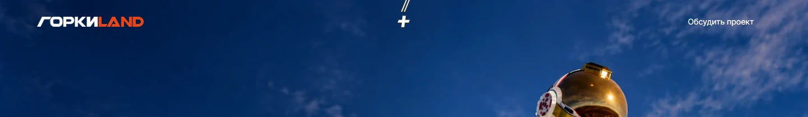
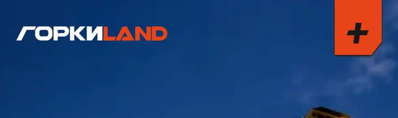
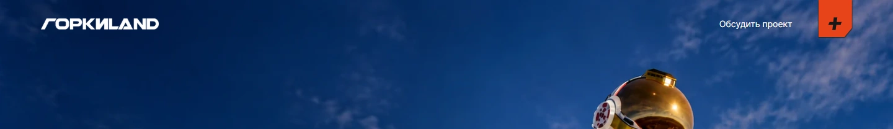
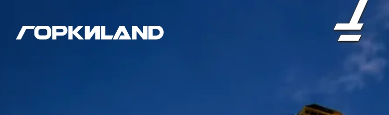
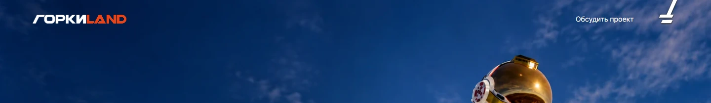
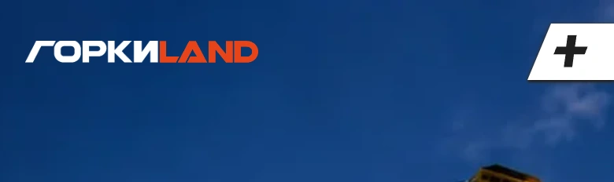
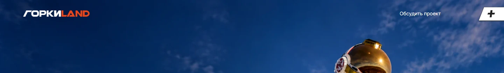
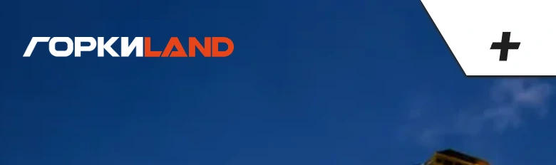
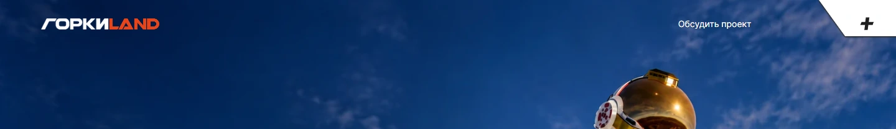

01Центр
Белый плюс висит на короткой паре наклонных штрихов точно над серединой экрана.

Попробовать на главной ↗Пять положений на одном кадре «Стратосферы». Выберите формат и нажмите на шапку, чтобы попробовать знак в работе.
Белый плюс висит на короткой паре наклонных штрихов точно над серединой экрана.

Попробовать на главной ↗Оранжевая закладка опускается справа от верхней кромки. Срез внизу повторяет наклон буквы «Г».


Попробовать на главной ↗Сверху спускаются две белые полосы разной длины. Их торцы срезаны под тем же углом, что и начало названия.


Попробовать на главной ↗Плюс вынесен на короткий белый выступ сбоку, на одной высоте с надписью. Над ним видно небо.


Попробовать на главной ↗Белая угловая вкладка с длинным косым срезом и тёмным плюсом. Весь знак примыкает к двум краям кадра.


Попробовать на главной ↗